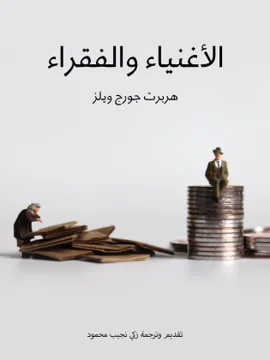

الأغنياء والفقراء

قراءة عربية أصلية محددة النطاق في الصفحات 7، 8 من ملف PDF المرتبط، وليست تلخيصا كاملا للكتاب. نناقش ما تدعمه هذه المقاطع فقط.
التمهيد الاجتماعي لقراءة ويلز
يقدم زكي نجيب محمود سيرة موجزة لويلز تربط نشأته وعمله وتعليمه العلمي بتحولاته الأدبية والسياسية. يذكر الكتابة العلمية والقصص والانشغال بالاشتراكية، ليهيئ القارئ لفهم موضع السؤال الاجتماعي في إنتاجه لا باعتباره موضوعا طارئا.
زاوية وحدود القراءة
هذه قراءة لمقدمة المترجم عن حياة المؤلف، وليست خلاصة حجج الأغنياء والفقراء نفسه. إبقاء مصدر الكلام واضحا يمنع نسبة تحليل التقديم إلى ويلز مباشرة أو ادعاء تغطية النظرية الاقتصادية للكتاب كله.
الطبعة والقراءة
نسخة إلكترونية مجانية من مؤسسة هنداوي عبر صفحات. رابط PDF من خادم الناشر يرسل الملف للتنزيل، ولا نستضيف الكتاب. هذه النسخة من الكتاب صادرة ومتاحة مجانًا بموجب اتفاق قانوني بين مؤسسة هنداوي وأسرة السيد الدكتور زكي نجيب محمود.
تنزيل PDF المجاني ↓ القراءة والمصدر الرسمي ↗